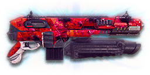

← Back to the TRAC-Shot comparison
Sage Guide · Terran Republic · Light Assault / Engineer
The reward for the Master Carbines directive: a TRAC-5 with a built-in Laser Sight, an Impulse Launcher under the barrel, and slower bullets to pay for both. You earned it with five auraxium medals — this page is how to get the most out of it.
The one-line verdict: your TRAC-5, rebuilt for close quarters — the same 750 RPM and 143-damage bullets, but with hipfire tied for the tightest of any carbine and a launcher that throws you onto rooftops. Its price is the slowest bullets of any TR carbine: 465 m/s. Fight between 10 and 39 metres and it will carry you.

The TRAC-Shot · Terran Republic · 40-round magazine
Every enemy infantry has 1,000 health (500 shield + 500 health). Your bullet does 143 damage up close, fading to 112 at long range. Headshots count double, leg shots count less (×0.9). That gives you three numbers worth memorising:
| Range | Damage | Head | Chest | Legs | Chest vs shielded Heavy |
|---|---|---|---|---|---|
| Close · 0–10 m | 143 | 4 | 7 | 8 | 11 |
| Mid · 10–39 m | 143→125 | 4 | 8 | 9 | 12 |
| Far · 39–60 m+ | 125→112 | 5 | 9 | 10 | 13 |
Perfect-accuracy times to kill: 4 headshots ≈ 0.24 s, 7 chest shots ≈ 0.48 s up close — 8 shots ≈ 0.56 s at mid-range, 9 shots ≈ 0.64 s far. In real fights you'll land maybe half your rounds — still, this is why the head matters so much on this gun. The exact edges: 7 chest shots hold to 10.2 m, 8 shots to 39.0 m. Maximum damage per second: 1,788. Magazine: 40 rounds, 240 in reserve.
Full power to 10 m, then a steady slide to minimum at 60 m. The gold line shows Soft Point Ammunition, which stretches full power to 15 m.
One gun, four fighting styles. The right technique changes with distance — use the range finder below to see what your bullets do at any range, then learn the four bands underneath it.
How to fight hereAim down sights at the upper chest and neck. Fire in bursts of 5–8 — your recoil climbs into the head for free damage.
Aim: centre of the chest, from the hip. Keep moving.
Scoping in costs you time and halves your move speed — at arm's length that gets you killed. The TRAC-Shot's hipfire is tied for the tightest of any carbine (1.0° standing, thanks to the built-in Laser Sight), so trust it and let the 40-round magazine do the work. Strafe side to side (A/D) while firing so you're hard to track.
Aim: neck / upper chest. Bursts of 5–8 rounds.
This is where the gun earns its keep: full 143 damage, mild recoil, fast handling. Start your crosshair at the neck — the natural upward climb walks your shots into the head, and 4 head hits end the fight in a quarter of a second. Strafe while scoped; you're slower, but a moving target still beats a still one.
Aim: chest. Bursts of 5–8 rounds, pause between them.
Damage is sliding toward 125 and your cone of fire blooms if you hold the trigger. Fire a burst, release for a split second to let accuracy reset, fire again. The recoil climbs up and to the right (23–25°), so pull your mouse gently down and to the left. Crouch or stand still when you can — both tighten your shots.
Aim: chest. Taps of 3–5 rounds at exposed targets only.
At 112 damage you need 9 chest hits — a long, loud advertisement of your position. Take these shots at stationary or fleeing targets, medics reviving, and engineers on turrets. Otherwise, your better play is to close the distance behind cover. Knowing when not to shoot is a skill too.
Your accuracy is decided by two things before skill even enters it: what your body is doing (your stance sets the starting cone of fire) and what your finger is doing (holding the trigger grows that cone with every shot). The TRAC-Shot has no fire-mode switch — full-auto only — so "firing modes" are something you do with your finger, not a setting on the gun.
| Stance | Starting cone | What it means for you |
|---|---|---|
| Sprinting | 7.0° | Maxed out — the widest the cone can be. Never start firing from a sprint. |
| Hipfire, moving | 1.34° | Walking or strafing from the hip. Fine inside ~10 m, leaks rounds past the target beyond it. |
| Hipfire, standing | 1.0° | Your point-blank default. The 0.17 m ring at 10 m in section 04 is this stance drawn out. |
| Hipfire, crouched | 0.67° | The tightest hipfire you have (1.0° if you crouch-walk). Crouch when holding a doorway from the hip. |
| Aimed (ADS), feet planted | 0.10° | Standing or crouched makes no difference here — ten times tighter than hipfire. This is why you plant your feet before you fire. |
| Aimed (ADS), strafing | 0.30° | Still tight, but three times wider than planted (0.20° if you crouch-walk) — and you move at half speed (0.5×). Strafe between bursts to stay hard to hit; plant your feet during each burst. |
| Mode | How your finger does it | Use it at |
|---|---|---|
| The mag dump | Hold the trigger and don't let go | Point blank only, or suppressing a doorway. Bloom maxes out fast — past ~8 rounds you're spraying, not aiming, even with 40 rounds in the magazine. |
| Bursts — the default | Hold for 5 rounds, release ~0.15 s, hold again. 6–8 rounds is fine while you're learning | Almost everything, 10–39 m. Each release resets the cone, so every burst starts at 0.10°. |
| Tap-fire | Short taps of 3–5, or single clicks, with a real pause between | 39 m and out, at exposed or stationary targets. Slow, but every round goes where the dot is. |
Why 5? The first 4 aimed shots (3 from the hip) fire before bloom pushes the cone up to the moving floor — that's the free window in every burst, and the reason 5 rounds is the ideal burst length. The cone still grows by 0.05° with every aimed shot, so the fifth shot is where the cost starts — but it still lands close, and 5 rounds is the burst that ends most close fights in the fewest clean hits.
A target 30 m away, aiming down sights. Press and hold FIRE (mouse, touch, or hold Space with the button focused) and watch the holes walk wider the longer you hold — that's firing from an ever-growing cone. Release, let the cone reset, fire again. Aim for bursts of 5; 6–8 is tolerable while you're new. This practice window is shared by the whole Sage series: it's driven by a weapon profile plugged into the window — here the TRAC-Shot's (750 RPM, 0.10° starting cone, 0.05° bloom per shot, target at 30 m) — and the spread is drawn at true scale from those numbers.
Cone of fire — fills as you hold, empties when you release.
Your bursts will be graded here — green at 5 rounds, tolerable up to 8.
Some things are easier to show than to say. Here's what your bullets actually do: how wide hipfire spreads at 10 metres, what a good burst rhythm looks like, and what the 2x sight really changes. The hands-on version — holding the trigger yourself — is the practice window in section 03.
A full-size target 10 m away — a room fight at the edge of hipfire range. The rings show where hipfire rounds land around your aim point (the chest). Sizes are drawn to scale from the gun's real cone-of-fire numbers.
Read it this way: standing still, the 0.17 m ring fits well inside a man's torso — rounds land on him at arm's length, and moving it grows to 0.23 m, still mostly on target. Crouch and it tightens to ≈ 0.12 m. The dashed grey ring is the TRAC-5 standing without a laser (0.26 m) — the built-in Laser Sight is already baked into every ring on this page, and it's worth a third tighter hipfire for free. Past ~10 m the rings only grow while the man doesn't — the exact moment to switch to aiming down sights, where the spread shrinks to a dot. (Ring sizes use the real geometry: spread diameter = 2 × distance × tan(cone ÷ 2).)
Every shot widens your cone of fire ("bloom"). Releasing the trigger for a heartbeat resets it. Same 18 rounds, two very different outcomes:
The target pattern is bursts of about 5 rounds — that's the ideal. Bursts of 6–8 are fine while you're new (call it newbie tolerance). Past that, the bloom (0.05° per shot aimed, 0.10° from the hip) keeps growing with every shot, so the extra bullets mostly decorate the wall behind your enemy instead of hitting him. Short bursts also leave you rounds for the second enemy — remember, the magazine is only 40.
No zoom. The target at 35 m is small but the view is wide open — you see the crate, the tower, and the next enemy coming. Fast to aim, nothing blocks your edges. Best inside ~40 m.
Same target, same 35 m — but he looks twice as tall, so placing shots on his chest and head gets much easier. The price: your view narrows to the round window, the crate and tower are gone, and close targets feel fast and huge. Best at 25–50 m.
That's the whole 30-cert decision from section 05 in one picture: 1x for awareness, 2x for precision. Most veterans carry both and swap per base — indoors 1x, open ground 2x.
The gun itself can't be bought with certs — it's the reward for completing the Master Carbines directive (auraxium medals on five carbines). Every attachment on it costs certs too. Your most important buys are cheap, though: both reflex sights are 30 certs each. Buy in the order shown and stop whenever the gun feels right.
Two things already come built in: the Laser Sight — your hipfire is already a third tighter than the TRAC-5's (1.0° standing instead of 1.5°) — and the Impulse Launcher underbarrel. The laser is free and permanent; the launcher is yours until you choose a different rail attachment.
A clean red-dot sight with no zoom. Your default optic, and honestly your best all-round option.
Good: everywhere indoors and out to ~40 m — which is most PlanetSide fights.
Bad: picking out targets past 50 m; that's what the 2x is for.
Doubles your view magnification. Costs almost nothing — the price of a few kills.
Good: open-field bases, tower fights, and your 25–39 m burst game. Swap between 1x and 2x per fight.
Bad: tight indoor rooms — the zoom makes close targets feel fast and huge.
Night-vision sight: enemies glow white against a dark view, and it sees through smoke.
Good: night fights, smoky doorways, spotting infiltrators by their outline.
Bad: daytime and long range — its view is short-ranged and washes out in bright light.
Designated Marksman Optics (chevron/crosshair) and Holographic Dot Sight (red dot) — mid-range magnification on an automatic carbine.
Good: almost nothing a veteran does with this gun — recoil magnifies too, and tunnels your vision.
Bad: any fight inside 30 m, which is where you'll spend most of your time with it.
Terran Marksman Scope (simple crosshair) and Advanced Combat Scope (triple chevron) — the most zoom this carbine takes, sniper-style magnification on an automatic.
Good: almost nothing a veteran does with this gun — recoil magnifies too, and tunnels your vision.
Bad: any fight inside 30 m, which is where you'll spend most of your time with it.
Fires a non-lethal grenade that knocks back the user and enemy infantry on impact — 0 damage, 5 m blast radius. It comes fitted by default. Cost: the gun takes 0.25 s longer to draw (0.80 s fitted, vs 0.55 s without it).
Good: as a Light Assault, this is a second jump jet — fire it at your feet to hop onto rooftops and containers, or shove an enemy off a point or out of cover. The knockback on yourself is stronger than on enemies, so aim it like a movement tool.
Bad: as a weapon — it deals no damage to anyone, so don't fire it at an enemy expecting a kill. Switch back to bullets for the actual fight. Toggle it with the Gear Slot 1 hotkey (1 by default).
The TRAC-Shot's recoil is already manageable, and its bullets are already the slowest of any TR carbine — nothing here is mandatory. Plenty of veterans run this slot empty forever.
Good: your first weeks with the gun. Spend certs on your suit slots and class tools first.
Bad: nothing — there's no downside to an empty slot.
Cuts vertical recoil by 30%. Costs you: hipfire spread grows 15%, and enemies see you on the minimap from 35 m farther away when you fire.
Good: if you mostly aim down sights at mid-range and the upward climb bothers you.
Bad: hipfire builds and sneaky play — you get louder on the map and sloppier from the hip.
Your shots bloom 20% slower while aiming — longer accurate bursts. But you move 20% slower while scoped.
Good: holding a lane or doorway at 25–39 m, firing from a steady position.
Bad: aggressive room-clearing — the slower scoped strafe makes you an easier target.
Hipfire bloom grows 40% slower — much steadier hip spraying. But vertical recoil rises 20% when you do aim.
Good: a dedicated close-quarters build — and the hipfire here is already the best in the class, so this stacks on a real strength.
Bad: general play — it taxes the aimed shooting you'll do most.
You vanish from the minimap when firing and your shots are quiet. In exchange, damage starts dropping off 20 m sooner (minimum damage at 40 m instead of 60 m) and bullets fly 15% slower (465 → 395 m/s) — harder to lead moving targets.
Good: flanking behind enemy lines, rooftop and tree work, solo play behind the front.
Bad: front-line fighting where everyone already knows where you are — you pay the damage cost for stealth you don't need, on the slowest bullets in the class.
Hides your muzzle flash so your own view stays clear at night — but you appear on enemy minimaps from 15 m farther away.
Good: night fights where your own flash blinds you. A comfort pick, nothing more.
Bad: as an early purchase — it changes no fight outcome. Buy it last, if ever.
Cuts side-to-side recoil by 25% (0.225° per shot becomes about 0.169°), keeping your bursts on a single target. Tiny cost: weapon swap is 0.15 s slower. The real cost: fitting it removes the Impulse Launcher — the rail holds one attachment at a time.
Good: the default for aimed, mid-range play — leave it on until you deliberately want the launcher back.
Bad: nothing meaningful. It only stops helping if you never aim down sights.
Underbarrel smoke grenade launcher — lays a smoke screen where it lands. Like the Impulse Launcher, it costs 0.25 s of draw time and replaces it. Toggle it with the Gear Slot 1 hotkey (1 by default).
Good: covering a revive, a point hold, or a retreat across open ground — smoke breaks line of sight for everyone, including the enemy.
Bad: as your everyday rail — it gives zero accuracy help, and you give up both the launcher and the grip for it.
A single-shot shotgun round under the barrel — one close-range blast, then it's spent until you resupply. Costs 0.25 s of draw time and replaces the Impulse Launcher. Toggle it with the Gear Slot 1 hotkey (1 by default).
Good: a panic button for the enemy who rounds the corner at arm's length — one blast at point-blank range, then back to the carbine.
Bad: anything past a few metres — one shot, long to bring back, and it costs you the launcher's movement every time you fit it.
Full 143 damage now reaches to 15 m instead of 10 m (the gold line on the chart above). Cost: bullets fly 10% slower (465 → 419 m/s).
Good: nearly always — most duels happen at 10–20 m, exactly where this extends your 7-shot / 4-headshot kill.
Bad: long-range duels against runners, where the slower bullet needs more lead. A small price.
Bullets fly 10% faster (465 → 512 m/s) and minimum damage reaches to 80 m instead of 60 m. Cost: full damage ends at 8 m instead of 10 m.
Good: long lanes and leading moving targets at 39 m+, where the faster bullet and later falloff both help — this is the fix for weak spot 1.
Bad: close fights — you give up 2 m of full damage for speed you don't need at arm's length.
Leg shots stop being punished — the leg multiplier flips from ×0.9 to ×1.2 — but headshots pay for it (×2 becomes ×1.5). Legs go from 8 shots to 6 up close; heads go from 4 to 5.
Good: if you consistently hit low — crouching enemies, downhill fights — where the leg bonus actually lands.
Bad: anyone who aims at the neck: you trade your best damage (the head) for your worst (the legs). The most expensive ammo here, and the easiest to regret.
Attachment costs only — the gun itself is a directive reward, not a purchase. Every setup below already has the built-in Laser Sight, and the Impulse Launcher fitted unless the rail says otherwise.
0 certs · Day one
What five auraxium medals buy you. Genuinely good — learn the gun on this before spending anything more.
230 certs · Recommended
The best value in this whole guide. Covers every fight from a doorway to a tower courtyard — just remember the launcher is gone while the grip is on.
230 certs · Indoor brawler
Built to hipfire down stairwells and hold a capture point room — and to bounce yourself onto the roof when the room gets too hot. Swap back to the All-Rounder outdoors.
330 certs · Long-range
The TRAC-Shot's long game: 25–39 m lanes, where the tight cone, fast bullets and late falloff all stack in your favour.
A Light Assault or Engineer has no overshield — never stand in the open to trade shots. Peek from a doorway, fire your burst, duck back. (Heavy Assault with ASP: your shield (F key) is the cover you carry — put it up before the corner, not during the duel.) A shielded Heavy needs 11 chest shots to drop up close instead of 7 — that gap wins duels, so don't hand it to the enemy for free.
Headshots deal double damage: 4 kills up close versus 7 to the chest. Don't aim at the head directly — aim at the neck and let the gun's natural upward climb carry shots two and three into the skull. It's the single biggest damage upgrade you own, and it's free.
Every shot widens your cone of fire. Holding the trigger past ~8 rounds at range means later bullets fly around your target, not into it. Five rounds is the ideal burst; release the trigger for a heartbeat between bursts — your accuracy resets and your hits per magazine roughly double.
Reloading with even 1 bullet left takes 2.6 s; an empty gun takes 3.7 s — an eternity mid-fight. Count roughly: after one kill or ~30 rounds, duck behind cover and reload early. Treat the last 10 rounds as your emergency reserve, not your working magazine.
Walk with your crosshair at head height, pointed where an enemy's head will appear — a doorway edge, a corner, stairs. Most veterans lose fights in the half-second spent dragging the crosshair onto target. While firing, tap A/D to strafe: your hipfire cone stays at 1.34° even while moving, so a moving target that hipfires back at you is still hard to hit — and you're the one landing rounds.
It deals no damage to anyone — so stop firing it at enemies and expecting kills. Fire it at your own feet to reach a rooftop, a container, a window ledge; fire it at a doorway to shove the enemy holding it off balance. Learn the toggle (1) until switching to it is muscle memory, and spend it freely — it's a movement tool, not a kill, so there's nothing to save it for.
Every gun has a price. Here's where the TRAC-Shot pays — and the habit that covers each hole.
465 m/s — the TRAC-5 manages 490, and every other TR carbine is faster still. Against a sprinting target at 40 m your bullets need noticeably more lead, and the gap only grows with distance.
Play around it: lead runners further than your TRAC-5 muscle memory says, and fit High Velocity Ammunition (465 → 512 m/s) for open bases.
Forty rounds, 240 in reserve, and no extended-magazine option on this gun at all. The magazine vanishes fast when suppressing a doorway, and a second enemy right after the first is a real problem.
Play around it: burst discipline (habit 3) and early reloads (habit 4). Your 2.6 s reload is quick for a carbine — reloading often is the design, not a failure.
Past 39 m you're at 9 chest shots to kill, and at 60 m you're down to 112 damage with bloom fighting you the whole way. Snipers and battle rifles own that ground.
Play around it: tap-fire at exposed targets only, and spend the rest of the time closing distance. You're a Light Assault — the rooftops and flanks are your address, not the firing line.
Its recoil angle is 23–25° rightward — a steep diagonal, not a straight climb. In a long burst your aim walks off the target's right shoulder — you'll see this clearly in the VR drill below.
Play around it: pull your mouse down-left while firing, in the opposite direction of the climb. The Forward Grip already trims the sideways part by 25%.
The gun takes 0.55 s to draw — 0.80 s with the Impulse Launcher fitted (0.70 s with the Forward Grip instead) — and like all carbines you move at half speed while aiming down sights (0.5×). A fight that surprises you with your tool out is a fight you start behind.
Play around it: hipfire inside 10 m instead of scoping (that's the Point Hold build's whole idea), and swap weapons behind cover, never in the open.
Open the world map, travel to VR Training, and run these on the target dummies. Five minutes before a play session beats an hour of dying confused.
Aim at a wall 20 m away and empty a full magazine without touching the mouse. Watch the bullet pattern climb up-right — that's your gun's fingerprint. Repeat, this time pulling down-left, until the group stays fist-sized.
Walk the dummy range keeping your crosshair glued to neck height the whole time, snapping to each new target without dipping to the floor or sky. Slow and clean first; speed comes on its own.
At 30–39 m, kill dummies with bursts of 5, releasing the trigger fully between bursts. If a burst goes wide, shorten it. Goal: whole kills without a single wild round.
Pick a dummy, stand 5 m away, and circle it with A/D while hipfiring it down without stopping. This is your point-blank survival skill — and on this gun the built-in laser makes it your party trick: the cone stays tight while you move.
Toggle to the launcher (1), fire it at your feet, and land on the containers and rooftops around the VR range. Learn the arc and the timing until the hop is automatic — as an Engineer, practise shoving a dummy off a ledge instead. Remember: it deals no damage, so the hop is the whole point.